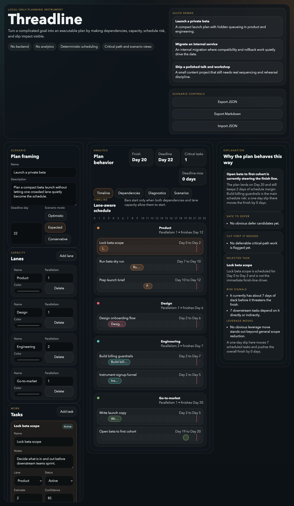

Step 1
The timeline makes hidden queueing visible.
Work does not just wait on dependencies. It also waits for people and lanes to free up. Threadline shows both at once.

Capacity changes the truth.
The plan is not just "A before B." It is "A before B, and B may still wait because
the lane is busy."
The finish line is legible.
The project finish, local deadlines, and critical tasks are visible without a giant
spreadsheet.